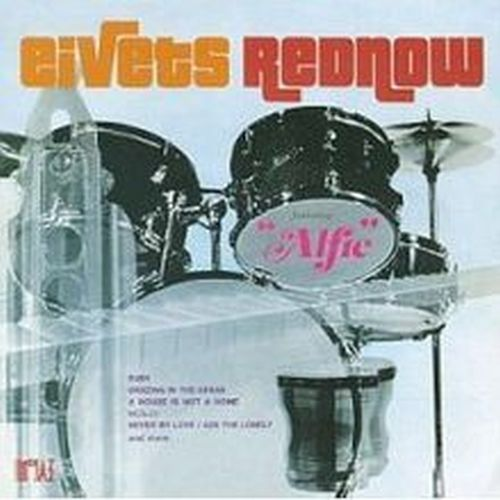

Álbum con canciones pop -basado en sonido de armónica- tocada por una persona multi-instrumentista como ya lo era desde sus inicios Stevie Wonder.
Wonder tenía problemas con la Motown por el férreo control artístico de la compañía, por lo que dió a luz este disco bajo el nombre de Eivets Rednow, curiosamente su nombre al revés leido de derecha a izquierda.
Stevie acoge un poco el espíritu de Burt Bacharach o de Toots Thielemans, pero sus acordes y arreglos a la armónica van hacia un territorio más amplio, mostrando su madurez. Todo ello de nuevo bajo la producción de Henry Cosby y la composición en algunos temas de Stevie Wonder.
